14/14 lolos audit dan terpasang. Semua karakter dipilih dari entri dengan informasi lengkap. Ilustrasi adalah interpretasi artistik AI berdasarkan sumber riset.
Dragon
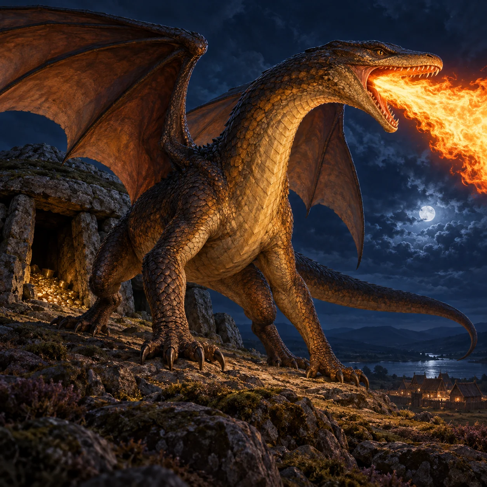
Western hornless four-legged winged fire-dragon before a hoard barrow, based on Beowulf fire and hoard narrative.
Aura: Imposing living Western dragon lit by its documented mouth fire.
Audit ciri dan sumber
- [object Object]
- [object Object]
- [object Object]
Corrected native individually inspected: one hornless smooth-headed dragon with four clearly separate grounded clawed legs, two shoulder wings and long tail. Fire issues from mouth, hoard in stone barrow and night setting clear, natural eye, imposing living creature; no text or watermark.
Review sumberONE square premium painterly naturalistic epic Mythics illustration of a WESTERN FIRE-BREATHING DRAGON based on dragon-c01,c03,c19,c20,c21 only. One enormous LONG SERPENTINE smooth-headed scaled reptile, ONE head with powerful long jaws, NO HORNS anywhere, NO SPIKES, NO ANTLERS, NO head crest, ears unornamented. Exactly FOUR CLAWED LEGS, place creature sideways in a broad THREE-QUARTER BODY VIEW so front left/right paws and BOTH rear legs/paws clearly readable and separately grounded; exactly TWO leathery wings physically on shoulder blades, one long smooth scaled tail. Not a two-legged wyvern. Teeth inside jaws and ordinary scales are enough menace. A huge stream of ordinary orange FIRE vomits clearly from mouth (c03,c21); both eyes natural nonluminous. Living dragon advances from rocky ancient barrow with a small gold hoard in its cave (c20), tiny distant wooden manor buildings below for monumental perspective, low camera, dark blue night (c19). Original natural ochre-black scale palette and composition, rich naturalistic painted texture. No Chinese dragon traits, generic energy effects, modern movie/game/anime/comic design, victims, gore, nudity, lettering, logos, border or watermark.
Athena
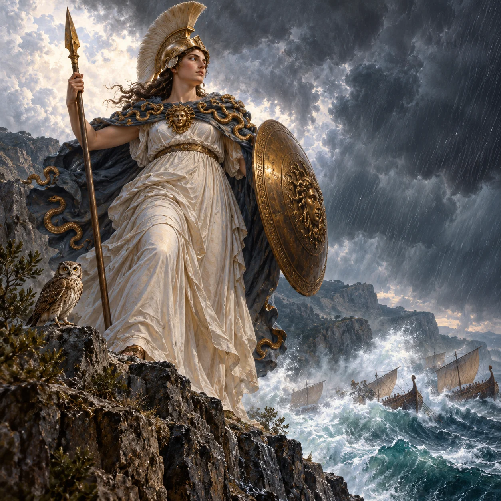
Helmeted Athena with spear, shield, snake-trimmed Gorgon aegis and owl, commanding a sea storm.
Aura: Helmeted Athena with spear, shield, snake-trimmed Gorgon aegis and owl, commanding a sea storm.
Audit ciri dan sumber
- [object Object]
- [object Object]
- [object Object]
Native individually inspected: coherent helmeted woman in opaque long robe with spear and round shield, snake-trimmed Gorgon aegis and owl. Strong monumental presence above Greek ships in rough storm sea; no generic energy, text or watermark.
Review sumberONE square premium painterly naturalistic original Greek mythology illustration of ATHENA, living stately bright-eyed woman one head two arms two legs, opaque long classical robe, golden crested helmet, spear in one hand and polished bronze round shield in the other; snake-trimmed aegis cape with ornamental Gorgon face at chest (athena-c05,c26,c37,c40). Looming divine presence high above dark Aegean cliffs, low camera, confident commanding martial action. A furious sea STORM drives enormous waves against tiny distant Greek ships below, expressing her documented attack on Greek ships with storm (c25), dramatic ocean spray and slashing rain and cloud but no lightning wielded from spear or eyes. One owl rests on cliff near her feet (c02,c37). Authentic classical iconography, readable anatomy and attributes; original composition distinct from Louvre sculpture. Rich painterly texture, no film/game/anime design, nudity, gore, text, labels, logos, border or watermark.
Brahma
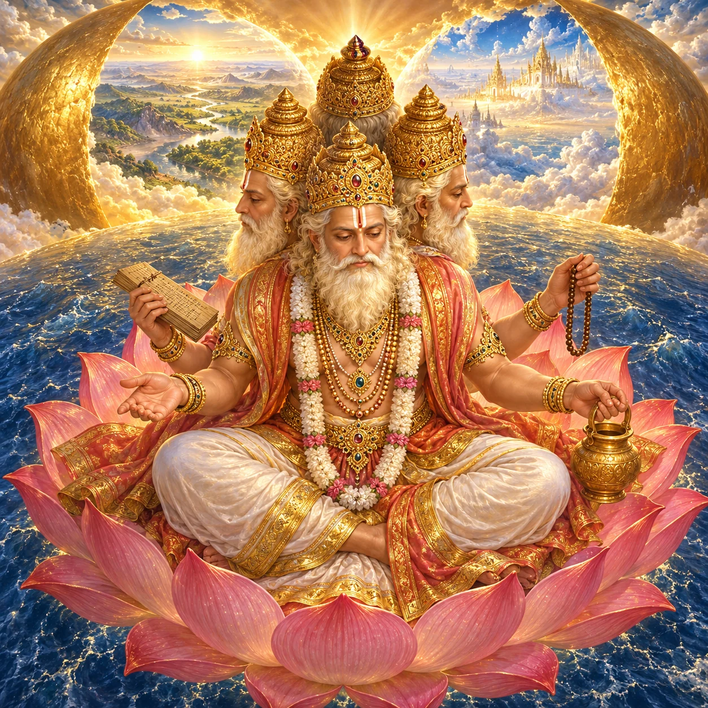
Four-headed and four-armed golden Brahma on a lotus amid split cosmic egg.
Aura: Creation grandeur and radiant cosmic egg.
Audit ciri dan sumber
- [object Object]
- [object Object]
Four separate crowns/heads including rear-facing head visible; four arms with manuscript, beads, vessel, open palm. Cosmic split golden egg and lotus.
Review sumberONE square premium painterly naturalistic epic respectful Hindu BRAHMA illustration. Anatomy priority: exactly FOUR DISTINCT SEPARATE GOLDEN BEARDED HEADS with FOUR clearly countable crowns on one torso, heads facing four cardinal directions (brahma-q11389-c03,c19,c20). Use an ELEVATED OBLIQUE THREE-QUARTER CAMERA looking down slightly at his heads so the front head, two side profile heads, and fourth head FACING AWAY at the back are all separately visible, fourth rear crown and rear skull clearly separated by background from other three. Not only three crowns; not five; not four unrelated people. Exactly FOUR ARMS, hands hold palm-leaf manuscript, beads, water vessel and an open creation gesture, NO weapons (c19). Two folded legs, fine opaque traditional robes; seated on large living lotus above endless primordial waters (c03). Vast golden cosmic egg splits into two curved halves behind him, brilliant gold light and emerging EARTH and HEAVEN horizons dramatize cosmogony c42,c43; no unrelated galaxy planets or laser attack. Figure fills frame majestically despite slightly elevated viewpoint. Fully readable countable anatomy, rich painted textures, no nudity, gore, modern movie/game/anime/comic designs, text, logo, border or watermark.
Shiva
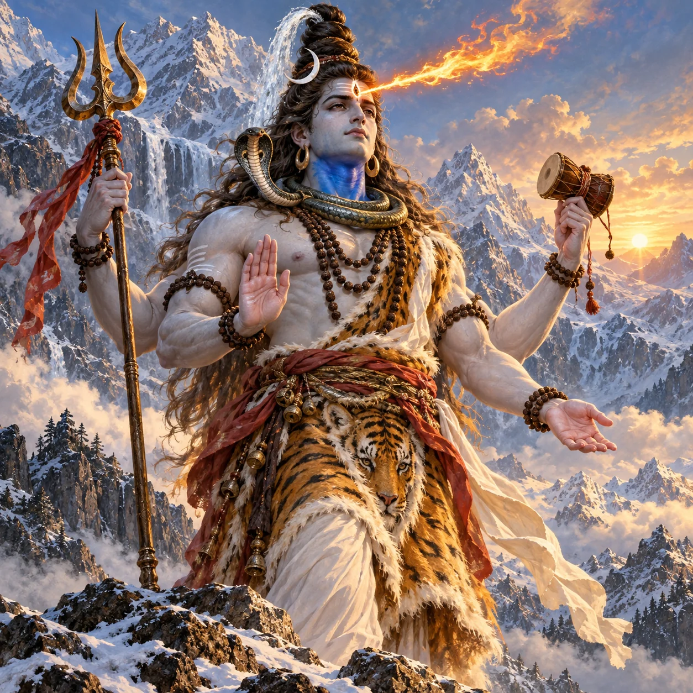
Majestic Shiva on Kailasa with traditional four-arm iconography, third-eye fire and Ganga flowing from matted hair.
Aura: Majestic protective authority, third-eye fire and flowing Ganga against natural mountain dawn.
Audit ciri dan sumber
- [object Object]
- [object Object]
- [object Object]
- [object Object]
- [object Object]
Selected native image individually inspected: four coherent arms with trident, damaru, open protective palms; third eye emits a directed flame, blue throat, physical Vasuki, crescent topknot and flowing Ganga. Mountain setting and tiger skin readable. Dignified imposing living deity, no text or watermark.
Review sumberUse case: stylized-concept. Create ONE square premium painterly naturalistic Mythics educational editorial illustration of SHIVA, respectful living Hindu religious iconography, majestic benevolent Protector in his mountain abode Kailasa, original composition. One monumental living deity fills the frame, pale ash-toned skin with a clearly BLUE THROAT, one head, exactly FOUR anatomically coherent arms and two legs. Third eye clearly in forehead; a physical serpent Vasuki loosely around his neck; crescent moon in high matted hair topknot; actual river water Ganga cascades gently from topknot; one hand holds a tall three-pronged trident, another holds a small damaru drum, other two hold calm protective gestures. Modest traditional tiger-skin cloth and drapery covers torso/lower body. View from low on the mountain with small distant peaks giving scale, composed authoritative upright active presence rather than ordinary human portrait. A narrow directed tongue of fire emerges clearly from the THIRD EYE, source-supported third-eye fire (shiva-c05,c20), distinct from the gently flowing Ganga (c05,c19). Keep face readable and beautiful, serene and awe-inspiring, no victims. Dramatic firelight and natural cool mountain dawn, rich brushwork, dignified authentic iconography. Blue throat c09,c25; mountain context c03,c29; four-arm arrangement is editorial traditional iconographic choice informed by sculpture reference, not asserted textual anatomy. Avoid cosmic generic ribbons, extra heads/limbs, weapons beyond trident, modern film/game/anime/comic designs, nakedness, gore, text, logos, labels, border or watermark.
Zhu Bajie
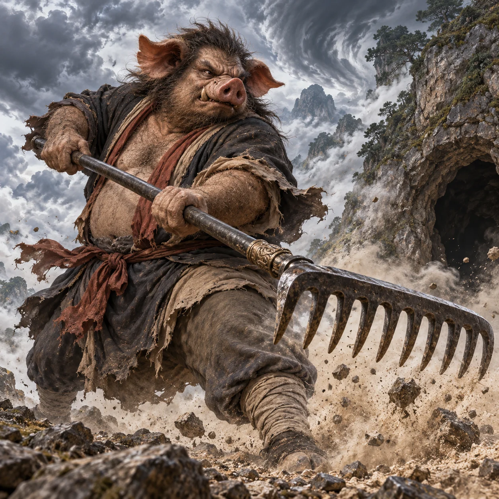
Boar-faced stout Zhu Bajie with nine-toothed rake stirring wind, clouds and flying sand.
Aura: Boar-faced stout Zhu Bajie with nine-toothed rake stirring wind, clouds and flying sand.
Audit ciri dan sumber
Native individually inspected: dark stout wild-boar face with long snout, huge ears and mane, two coherent arms wield rake with nine separately countable tines. Flying sand/rocks, clouds and mountain cave express c37,c34. Menacing living hybrid, no text or watermark.
Review sumberONE square premium painterly naturalistic Mythics mythology catalogue illustration, nama-besar epic house style. ZHU BAJIE as living fierce half-man HALF-PIG monster from original Journey to the West. One dark stout humanoid, long PIG SNOUT, huge pig ears, bristly MANE behind head and wild-boar face (c36,c40), exactly two arms and two legs, modest historic Chinese pilgrim tunic and trousers, imposing rather than comic toy. Firmly grips a great IRON RAKE with exactly NINE DISTINCT TEETH arranged in a clearly countable row (c38), broadside readable tool. Swings the rake as wind whips natural dust and stones, storm clouds and mist accumulate behind him from documented wind/cloud/sand powers (c37). Low camera outside his mountain cave Fuling/Yunzhan (c34), figure fills frame, strong coherent anatomy, rich painterly fur and cloth, no modern game/movie/anime designs. Original composition, not copied from Commons reference. No extra limbs, nudity, gore, modern film/game/anime/comic designs, text, labels, logo, border or watermark.
Nezha
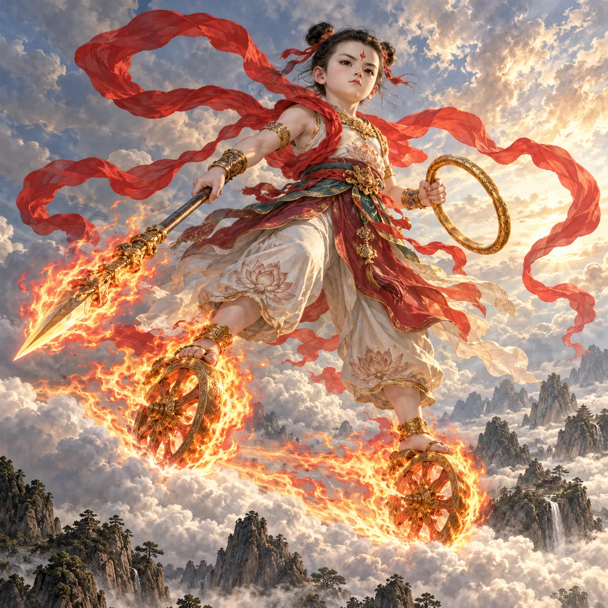
One-headed lotus-body Nezha flying on two wind-fire wheels, carrying fire-tipped spear, golden ring and red silk.
Aura: One-headed lotus-body Nezha flying on two wind-fire wheels, carrying fire-tipped spear, golden ring and red silk.
Audit ciri dan sumber
Native individually inspected: one pale youthful head, two arms holding fiery spear and golden ring, two legs each riding one of two clearly separate flaming wheels. Opaque lotus-pattern garments, physical red silk sash, coherent anatomy and active divine presence; no text/watermark or copied adaptation design. Forehead ornament/hair are editorial traditional costume details.
Review sumberONE square premium painterly naturalistic Mythics mythology illustration, nama-besar epic source-supported style. NEZHA in FENGSHEN YANYI resurrected youthful form, choose ONE HEAD exactly TWO ARMS TWO LEGS, not multihead variant from other texts. Pale youthful boy deity face white as powder (c14), modest opaque traditional lotus-inspired clothes cover entire torso and lower body (c28). Stands dynamically one foot on each of exactly TWO WIND-FIRE WHEELS, both burning physical wheels obvious beneath feet (c29,c04), streaks of flame follow wheels through natural clouds. One hand holds FIRE-TIPPED SPEAR (c29), other holds GOLDEN QIANKUN QUAN bracelet/ring (c15); one physical RED SILK HUNTIAN LING sash flowing around belly/shoulders in wind (c14,c15), not generic energy ribbons. Awe-inspiring determined protective child deity, no modern animated film hair/face/costumes, not comic caricature. Low-camera huge presence above tiny mountains. Original composition; coherent readable anatomy. No modern film/game/anime/comic designs, nudity, gore, text, label, logo, border or watermark.
Krishna
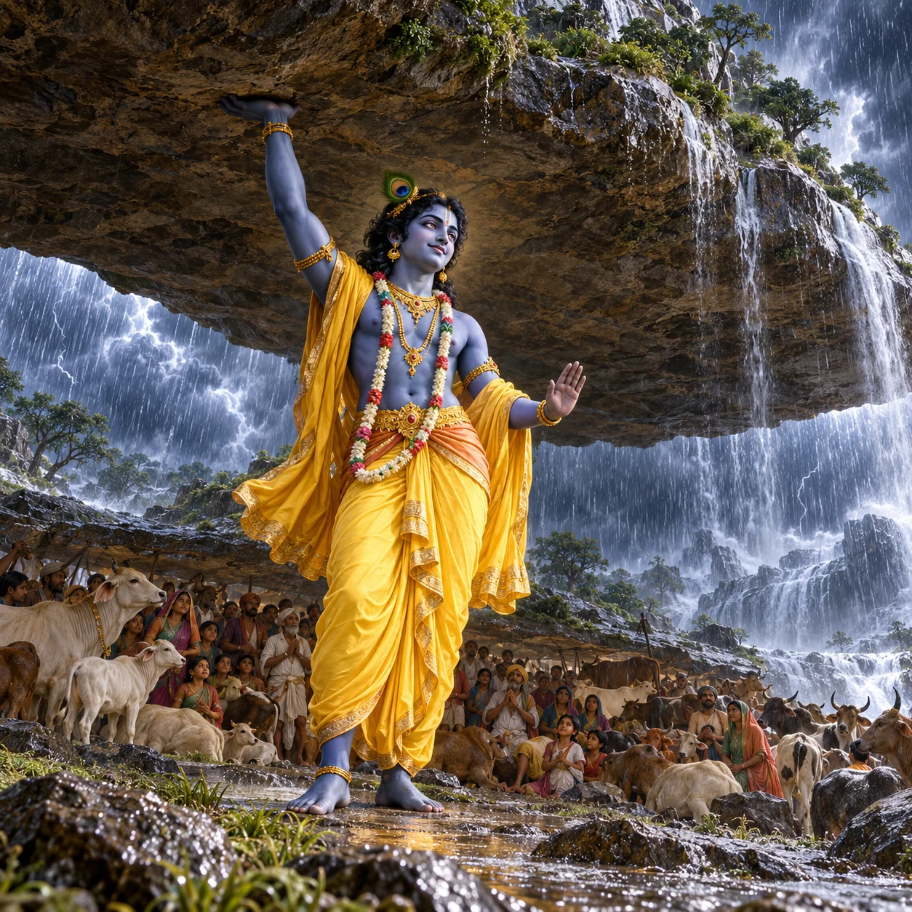
Blue-black Krishna in yellow robe and peacock feather lifting Govardhan with one hand to shelter villagers and cattle from rain.
Aura: Blue-black Krishna in yellow robe and peacock feather lifting Govardhan with one hand to shelter villagers and cattle from rain.
Audit ciri dan sumber
- [object Object]
- [object Object]
Native individually inspected: two coherent arms, raised hand physically supporting suspended Govardhan, other in protective gesture; blue-black skin, yellow drapery and peacock feather clear. Villagers and cattle shelter beneath hill while rain falls outside; majestic deity with no text or watermark.
Review sumberONE square premium painterly naturalistic mythological education illustration of KRISHNA, respectful Hindu iconography. One radiant dignified youthful living deity with BLUE-BLACK skin, one head exactly two arms, two legs, yellow opaque robe, peacock feather in dark hair (krishna-c24). He holds a whole immense ROCKY GOVARDHAN HILL aloft with ONE raised hand effortlessly like a roof, clearly separated from ground and visibly supported by his palm (c05,c18,c31); other hand open protective gesture. Under the great overhanging hill, tiny distant cowherd villagers and cattle shelter safely from driving torrents of rain outside; seven-day deluge story c31. Low camera, figure dominates foreground with serene compassionate power amid epic storm, dramatic natural light glints on lifted wet rock, painterly rich detail. No generic energy ribbons, emitted fire, extra heads/arms, modern film/game/anime designs, gore, text, labels, logos, border or watermark. Modest opaque drapery covers torso and lower body, original scene rather than copying historical painting.
Sun Wukong
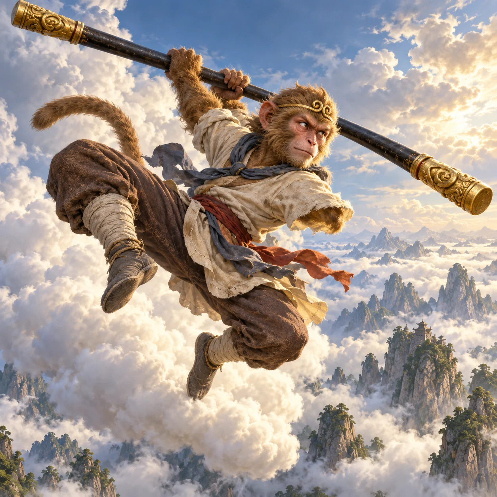
Macaque Sun Wukong somersaulting on clouds with black iron gold-banded staff and circlet.
Aura: Macaque Sun Wukong somersaulting on clouds with black iron gold-banded staff and circlet.
Audit ciri dan sumber
Native individually inspected: actual furry macaque face/ears and tail, two arms grasp black iron staff with gold-banded ends; two legs folded in dynamic aerial cloud leap, circlet, simple historic clothing. Coherent anatomy and strong mythic presence, no text, watermark or modern branded design.
Review sumberONE square premium painterly naturalistic Mythics mythology catalogue illustration, nama-besar epic house style. SUN WUKONG as original Ming novel Journey to the West monkey pilgrim, one living furry MACAQUE with actual monkey muzzle and ears, one head two arms two legs (c33,c38), expressive cunning defiant face, simple historic Chinese opaque pilgrim tunic, trousers and cloth boots, tight golden head circlet (c10). Dynamic full-body aerial SOMERSAULT ON A CLOUD high above tiny distant mountain peaks (c40,c08), clear actual clouds rather than neon energy ribbons. Both hands firmly grip one BLACK IRON STAFF with GOLD BANDS at its TWO ENDS (c41), oversized heavy staff silhouette; NO lettered inscription because catalogue images have no text. Diagonal fearless motion and monumental perspective, rich fur detail, heavenly grandeur, no human anime face, modern branded armor or movie/game/comic designs. Original composition, not copied from Commons reference. No extra limbs, nudity, gore, modern film/game/anime/comic designs, text, labels, logo, border or watermark.
Vishnu
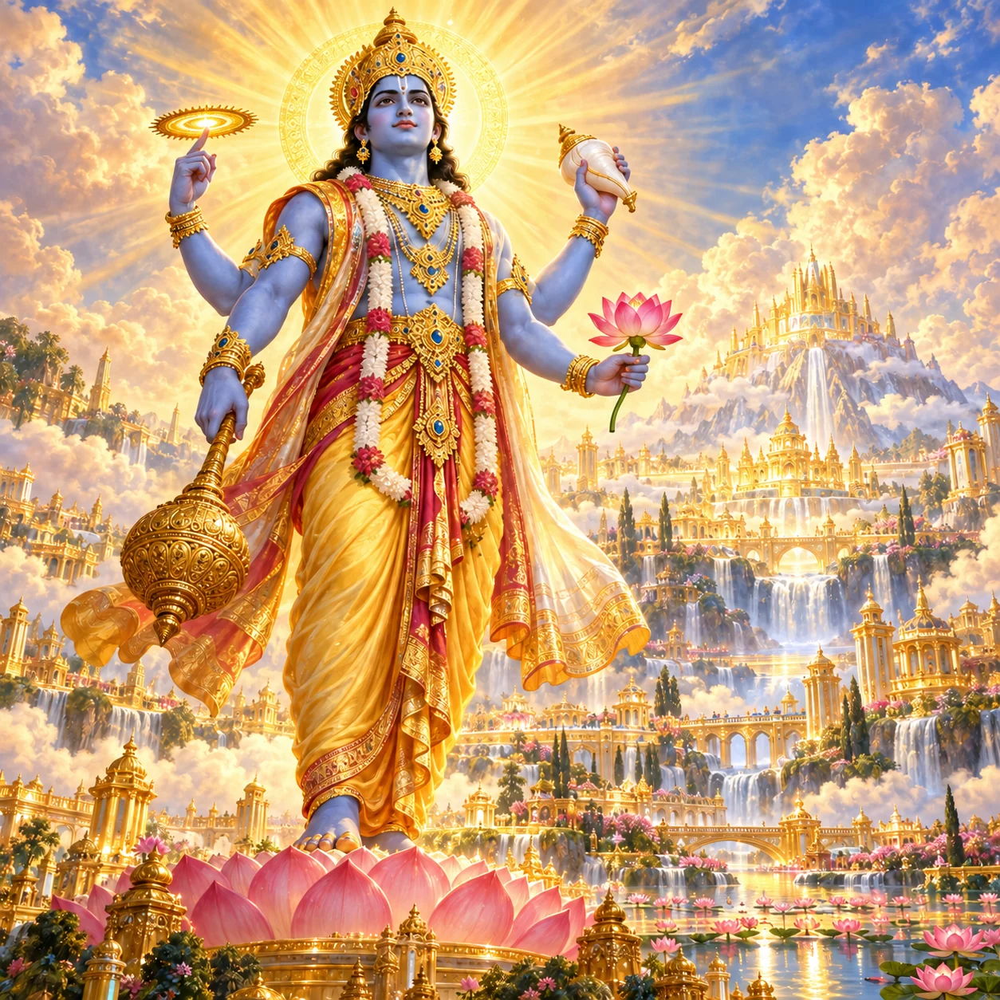
Four-armed blue Vishnu bearing discus, conch, mace and lotus in Vaikuntha, with solar-domain radiance.
Aura: Four-armed blue Vishnu bearing discus, conch, mace and lotus in Vaikuntha, with solar-domain radiance.
Audit ciri dan sumber
Four arms with conch, disk, mace and lotus; no peacock feather. Blue skin, golden radiant cosmic scale, living figure.
Review sumberEdit only the crown of this Vishnu image: REMOVE the PEACOCK FEATHER completely and replace that tiny crown-top area with plain gold jewelwork or unobstructed background. Preserve exactly the same four arms, discus, conch, mace, lotus, blue skin, gold Vaikuntha, solar radiance, clothing, framing, painterly style and every other detail. The source supports four attributes vishnu-c22, blue skin c21, Vaikuntha c13 and solar association c23, but does not support a peacock feather for this Vishnu. No words or watermark.
Zeus
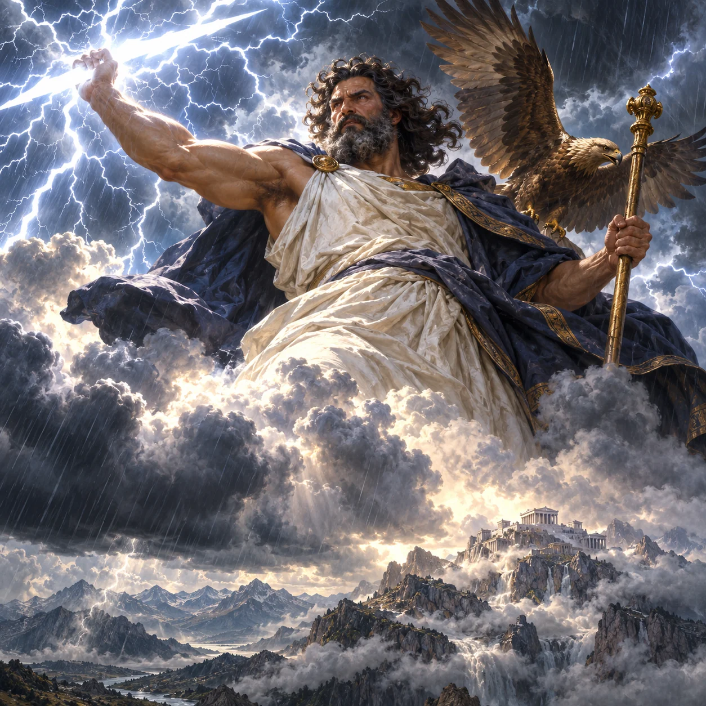
Regal dark-bearded Zeus hurling lightning above Olympus, bearing sceptre with eagle.
Aura: Monumental king of heaven with documented lightning and storm.
Audit ciri dan sumber
- [object Object]
- [object Object]
Native individually inspected: mature dark-bearded regal Zeus, two coherent arms grasp lightning and sceptre, one eagle, Olympus distant below; lightning/weather overwhelming but face and attributes clear. No text or watermark.
Review sumberOne square premium painterly naturalistic Greek mythology illustration ZEUS, regal mature living man with thick dark curled beard and hair (zeus-c02), exactly one head two arms two legs, classical opaque chiton and mantle. The KING OF HEAVEN dominates frame from an immense storm cloud above distant tiny Olympus mountains (c01,c09). Three-quarter low camera, furious powerful authority: one arm hurls a physical forked LIGHTNING BOLT like a javelin (c12,c18,c21), other hand grips royal sceptre, a single eagle beside him (c02,c21). Strong sky-wide white lightning, churning storm clouds and rain visibly express weather dominion c02,c09. True mythic presence, not ordinary man posing, coherent hands and readable face, rich naturalistic painted surfaces, no video game/film/anime designs, nudity, gore, text, labels, border or watermark.
Apollo
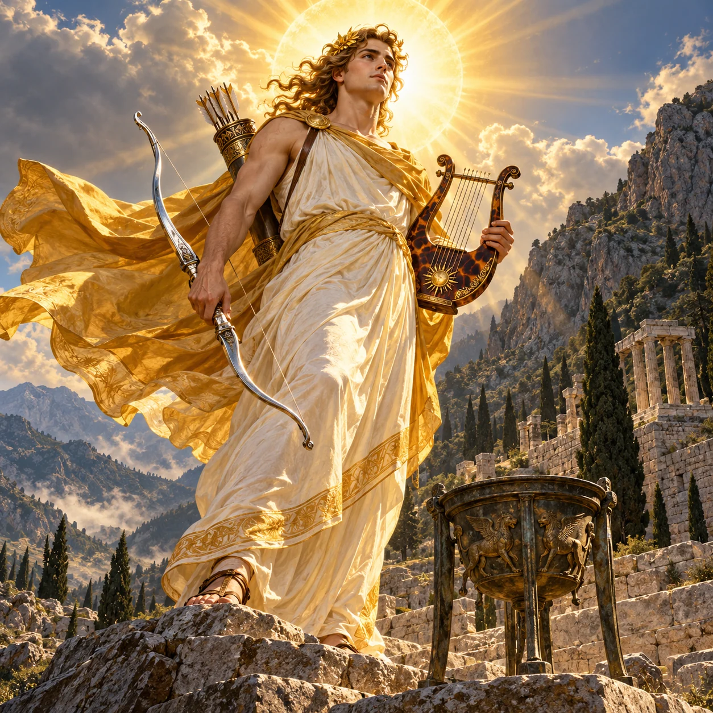
Solar-associated Phoebus Apollo at Delphi with silver bow, tortoiseshell lyre and oracle tripod.
Aura: Solar-associated Phoebus Apollo at Delphi with silver bow, tortoiseshell lyre and oracle tripod.
Audit ciri dan sumber
Native individually inspected: beautiful beardless long-haired youth, silver bow, tortoiseshell lyre, quiver and bronze tripod at Delphi; later solar association rendered as golden sun radiance. Two coherent arms and classical modest robes, majestic rather than ordinary human portrait. No text or watermark.
Review sumberONE square premium painterly naturalistic Mythics mythology illustration, nama-besar epic source-supported style. APOLLO in later Greek Phoebus solar association (c24,c25), one living handsome beardless youth with long curled hair (c05), one head two arms two legs, opaque flowing chiton and mantle fully covers torso/lower body. Dominates low-angle view above Delphi rocky sanctuary (c02,c06); one hand carries SILVER BOW and quiver, the other holds a distinct tortoiseshell LYRE (c22,c37), bronze oracle tripod at his feet (c33,c37). Immense golden SUN radiance behind him expresses documented later solar association, light and healing domain (c01,c24,c25); not a torch or invented lightning/fire attacks. Confident commanding beautiful bright gaze, dramatic wind and warm rays against deep mountain shadow, original active composition, unmistakable deity. Original composition; coherent readable anatomy. No modern film/game/anime/comic designs, nudity, gore, text, label, logo, border or watermark.
Erlang Shen
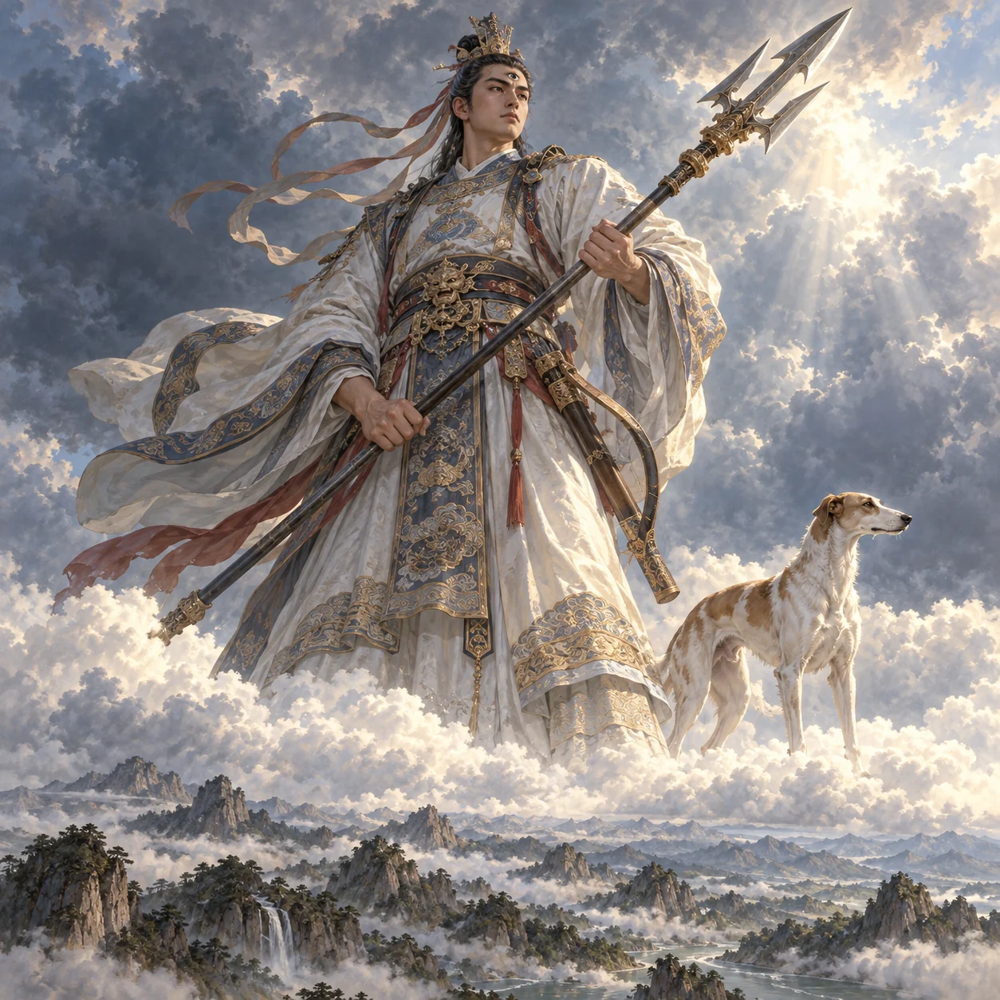
Three-eyed Erlang in colossal novel transformation, with three-pointed spear, waist bow and hunting hound.
Aura: Three-eyed Erlang in colossal novel transformation, with three-pointed spear, waist bow and hunting hound.
Audit ciri dan sumber
Native individually inspected: one noble youthful head with third eye, two coherent arms gripping three-pointed spear, waist pellet bow and one hunting hound. Giant form above tiny mountain range clearly expresses c19; robe/crown decorative only, no eye/spear beam, text or watermark.
Review sumberONE square premium painterly naturalistic Mythics mythology illustration, nama-besar epic source-supported style. ERLANG SHEN as noble young living Chinese warrior deity with a clearly THIRD truth-seeing EYE in the centre of forehead (c06), exactly one head two arms two legs; dignified original historic Chinese court-warrior robes, no modern videogame armor. Towering colossal form ten thousand zhang tall from Journey to the West (c19), cloud deck at knees, tiny mountain chain beneath as comparative scale. Holds THREE-POINTED DOUBLE-EDGED SPEAR firmly with both hands, spear physical not lightning emitter (c19,c21); pellet bow at waist (c21); one slender loyal hunting hound alongside him (c06,c20), no horns/wings. Imposing just authority and giant clear silhouette in storm-clearing natural light, overwhelming scale is documented transformation rather than invented power aura. Original composition; coherent readable anatomy. No modern film/game/anime/comic designs, nudity, gore, text, label, logo, border or watermark.
Sha Wujing
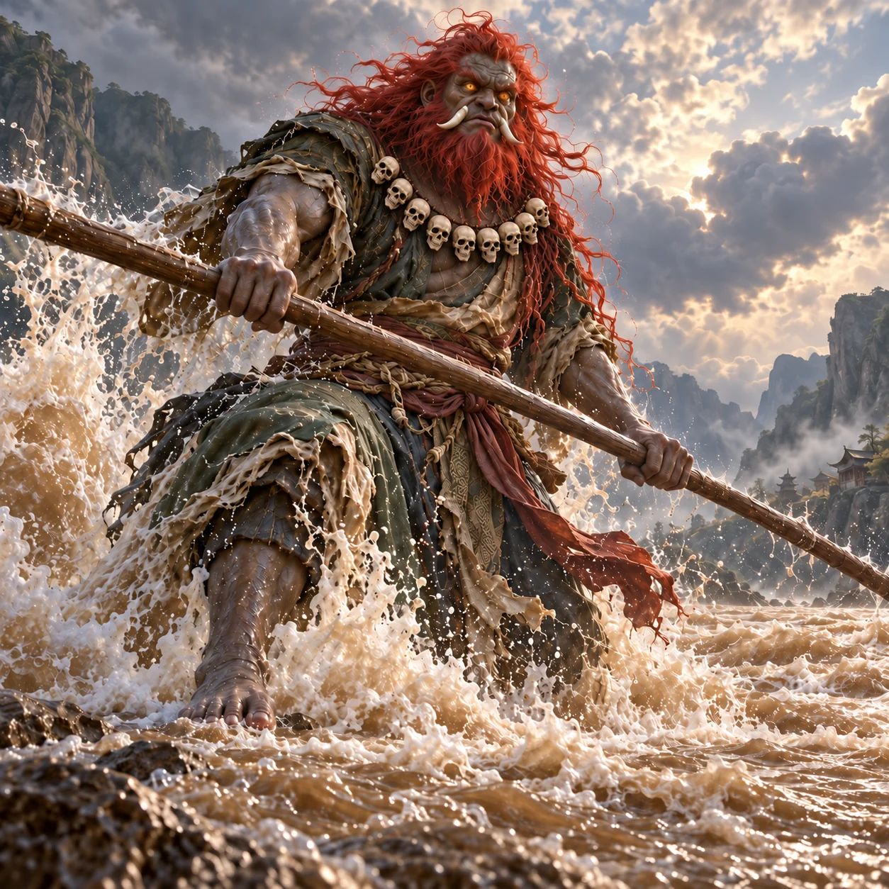
Tusking red-haired Sha Wujing with stove-lamp eyes, nine skulls and lengthened staff emerging from Flowing Sands River.
Aura: Tusking red-haired Sha Wujing with stove-lamp eyes, nine skulls and lengthened staff emerging from Flowing Sands River.
Audit ciri dan sumber
Exactly nine separated dry skull pendants counted left to right; red hair/beard, tusks, dark skin, amber eyes, plain staff and turbulent river; correction now passes.
Review sumberEdit ONLY necklace in this Sha Wujing image. Replace ENTIRE current skull necklace with exactly NINE visibly separated small dry ivory skull pendants. Arrange ALL NINE in a single WIDE FRONT ROW across upper chest in a shallow curve; each identical sized individual skull has its own distinct face, eye sockets and jaw, separated by dark gaps. Count from viewer LEFT to RIGHT: 1,2,3,4,5,6,7,8,9. No pendant hidden by hair, neck, shoulder, beard, other skulls or hands. Make ample space by removing hair overlapping necklace and shrinking skulls. Nine skulls total, no extra. Preserve tusks, fiery red hair/beard, dark ashen skin, amber eyes, two arms, two legs, staff, wild river, composition and style. No text or numbers visible.
Aphrodite
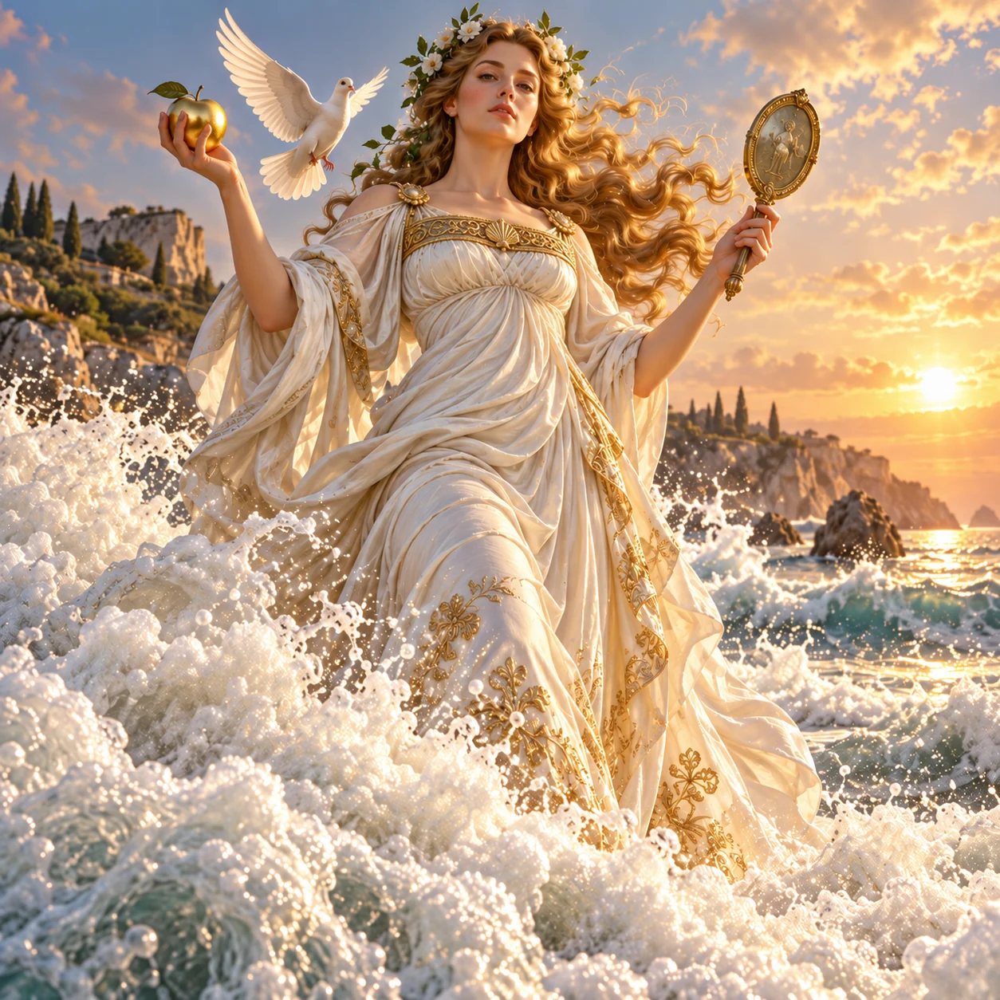
Fully clothed foam-born Aphrodite with magical girdle, mirror, apple, myrtle and dove.
Aura: Fully clothed foam-born Aphrodite with magical girdle, mirror, apple, myrtle and dove.
Audit ciri dan sumber
Chest band corrected above bust, no waist girdle. Modest drapery, apple, mirror, dove, sea foam and radiant sunset.
Review sumberEdit only the embroidered golden band in this Aphrodite image. REMOVE the broad embroidered belt at the waist, replacing it with uninterrupted opaque white robe folds. Put a narrower elaborately embroidered golden PHYSICAL BAND horizontally ACROSS THE UPPER CHEST, above the bust and below the collarbones, on top of the opaque robe, as c48 describes. It must visibly cross the chest, not waist or abdomen. Preserve face, pose, two hands with apple and mirror, dove, myrtle, foam, Cyprus coastline, lighting, fully clothed modest figure, original composition and painterly texture. No invented beams/hearts, no text or watermark.